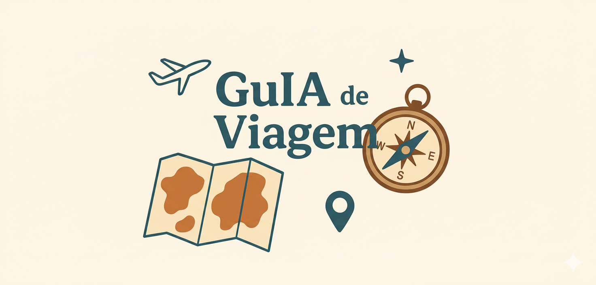

Luca Ferreira Barboza
Estudante de Estatística.
Estudante de Inteligência Artificial e Machine Learning.

Sobre Mim
Objetivo Profissional
Estágio nas áreas de Estatística, Ciência de Dados ou Inteligência Artificial, buscando aplicar conhecimentos analíticos, modelagem estatística e uso de LLMs no desenvolvimento de soluções práticas.
Resumo Profissional
Estudante de Estatística (Bacharelado) na UFBA e de Inteligência Artificial e Machine Learning (Tecnólogo) na Uniasselvi. Além disso, atuo há mais de um ano como pesquisador no laboratório ENIA LABS (Engenharia de Inteligência Artificial da UFBA), com experiência prática no desenvolvimento de soluções utilizando APIs de LLMs, banco de dados e aplicações web. Participo de iniciação científica voltada para a criação de soluções de Inteligência Artificial para uso acadêmico.
Possuo conhecimentos em análise de dados, probabilidade, modelagem de regressão linear e uso de LLMs. Já apresentei pesquisas e aplicações práticas em congressos científicos e workshops na universidade.
Projetos que Construí
Maria Madalena
Um chatbot interativo com objetivo de fazer coleta de dados qualitativos, após isso estruturá-los usando a tecnologia do output estruturado.

Enriquecimento e Estruturação Automatizada de Dados de Entrevistas com IA
Conversor de áudio em texto e, em seguida, utiliza o output estruturado do Gemini para extrair as informações em formato JSON. Essa abordagem visa simplificar e acelerar a coleta de dados qualitativos, além de superar a rigidez de formulários tradicionais e poder coletar informações adicionais.

GuIA de Viagens
Um app que usa Inteligência Artificial para criar roteiros de viagem personalizados, basta informar o país de destino e as datas.

Análise da Indicação e Premiação do OSCAR de 1927- 2020
Uma análise exploratória de dados sobre os filmes indicados e vencedores do Oscar de Melhor Filme ao longo de 93 anos.

Dashboard dos dados da Copa do Mundo de 2022
Dashboard no Excel para analisar estatísticas da Copa do Mundo de 2022. O projeto explora métricas como gols marcados, chutes a gol e divididas ganhas.

Análise de Regressão dos fatores que influenciam na felicidade de um país
Este estudo utiliza um modelo de regressão linear múltipla para identificar os fatores determinantes para a felicidade de uma nação, com base no World Happiness Report 2021.
Meu Currículo
Objetivo Profissional
Estágio nas áreas de Estatística, Ciência de Dados ou Inteligência Artificial, buscando aplicar conhecimentos analíticos, modelagem estatística e uso de LLMs no desenvolvimento de soluções práticas.
Resumo Profissional
Estudante de Estatística (UFBA) e de Inteligência Artificial e Machine Learning (Uniasselvi). Atuo há mais de um ano como pesquisador no laboratório ENIA LABS (UFBA), com experiência prática no desenvolvimento de soluções utilizando APIs de LLMs, banco de dados e aplicações web. Participo de iniciação científica voltada para a criação de soluções de Inteligência Artificial para uso acadêmico.
Possuo conhecimentos em análise de dados, probabilidade, modelagem de regressão linear e uso de LLMs. Já apresentei pesquisas e aplicações práticas em congressos científicos e workshops na universidade.
Educação
Experiência Profissional e Acadêmica
2026 - Presente
Monitor da Olimpíada Brasileira de Estatística (OBE)
Universidade Federal da Bahia (UFBA)
- Divulgação da olimpíada em escolas de ensino médio e enriquecimento da base de dados escolar da Bahia.
2025 - Presente
Pesquisador
ENIA LABS (Laboratório de Engenharia de Inteligência Artificial - UFBA)
- Desenvolvimento de soluções de IA (APIs de LLMs, Python, Banco de Dados).
2025 - Presente
Iniciação Científica (PIBIC)
Universidade Federal da Bahia (UFBA)
- Pesquisa e desenvolvimento de soluções de IA voltadas para docência e pesquisa na UFBA.
2025
Monitor de Análise Descritiva e Exploratória de Dados
Universidade Federal da Bahia (UFBA)
- Orientação a estudantes e suporte em laboratórios de programação na linguagem R.
Habilidades
Hard Skills
Soft Skills
Cursos, Certificados e Participações
2026
11º Workshop de Soluções Matemáticas para Problemas Industriais
Centro de Ciências Matemáticas Aplicadas à Indústria (CeMEAI / USP) - Carga Horária: 40h
2025
I Workshop de Estatística e Ciência de Dados Aplicadas a Finanças (I WECDAF)
Centro de Estudos do Risco do Departamento de Estatística (CER-DEst/UFBA)
2025
Participação, Apresentação e Minicurso no 3rd Sally Day
Statistical Learning Laboratory (SaLLy - UFBA) (Minicurso APIs de LLMs)
2025
Apresentações Orais no Congresso UFBA 2025
Universidade Federal da Bahia (UFBA) (Maria Madalena) (Extração de Áudio)